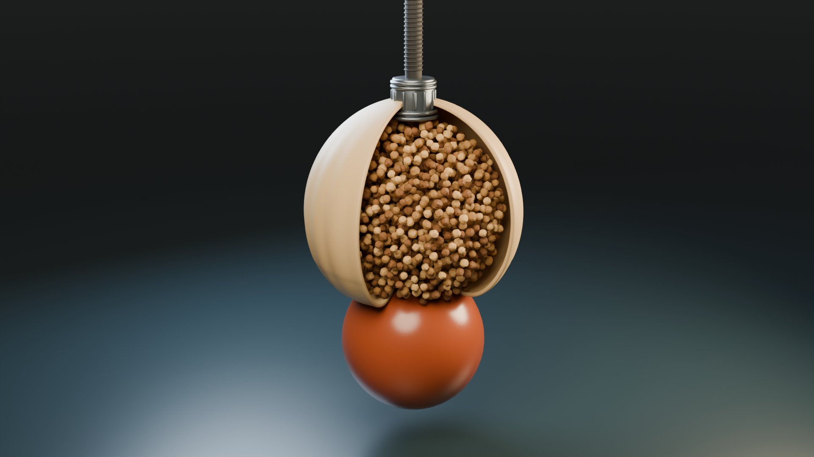

01 / 封面已确定

APPROVED · AThis Sand Sings
沿用这套沙金与深色的视觉方向，作为 Visual & Sound 系列的起点。
02 / 美音旁白 · D / E / F
三位均为美音男声。同一段自然叙述、统一试听音量、不加背景音乐。编号接续上一轮，避免混淆。
试听后查看声音信息
D · Eric — Smooth, Trustworthy
E · Roger — Laid-Back, Casual, Resonant
F · Brian — Deep, Resonant and Comforting
声音库标注均为 American。使用相同生成参数，风格夸张度设为 0；最终是否自然、是否有足够厚度，以你的试听感受为准。
03 / 3D · 材质与镜头
完整软袋先接触物体，再打开剖面展示颗粒；镜头缓慢靠近并跟随抓取过程。补入细密表面纹理、金属接头、软管细节和不规则颗粒。
高清动画正在渲染。声音可以先试听；动画完成后会自动启用。

18 秒 · 1920 × 1080 · 24 fps。此样片专供观看模型与镜头，没有另加解说。它是原理演示动画，不是经过校准的颗粒物理仿真。
下载 3D 样片 · 查看 4K 材质静帧
04 / 你的选择